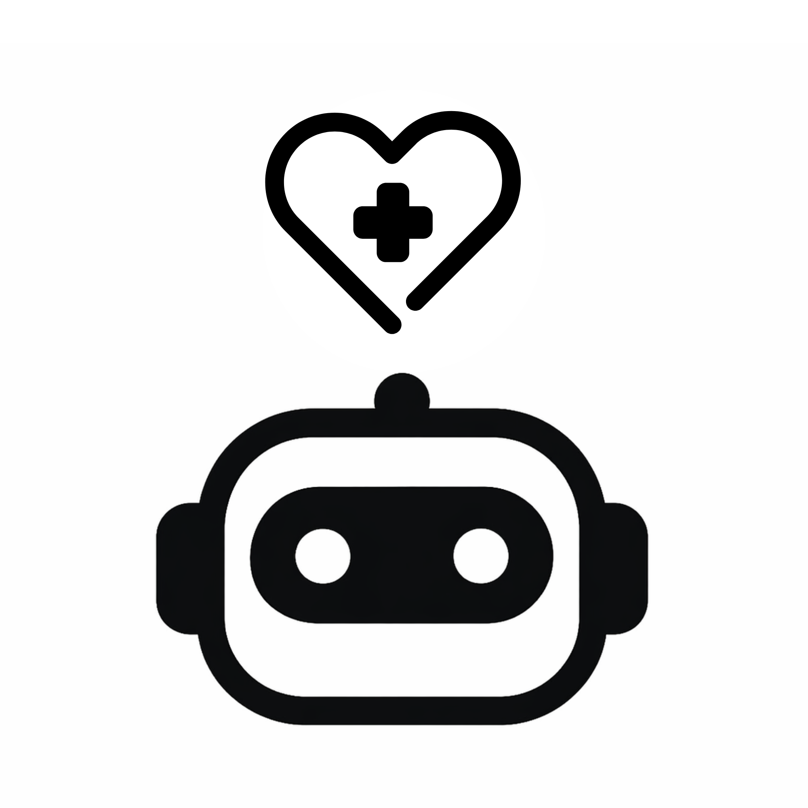
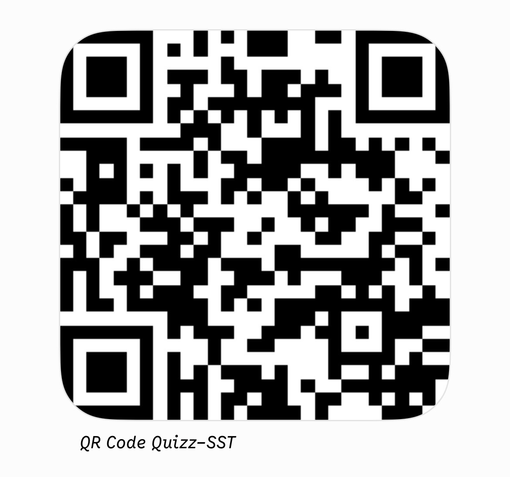

Mode Élève
Mode Examinateur

En attente des connexions...
Module terminé
Saisissez votre prénom pour le formateur.
Regardez le formateur, la suite arrive.
Votre score final :
Bravo à tous pour ce module !